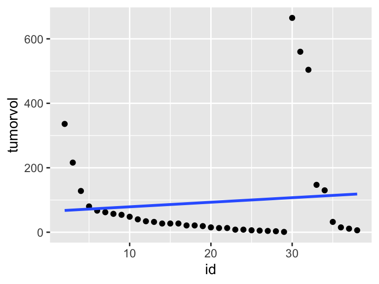
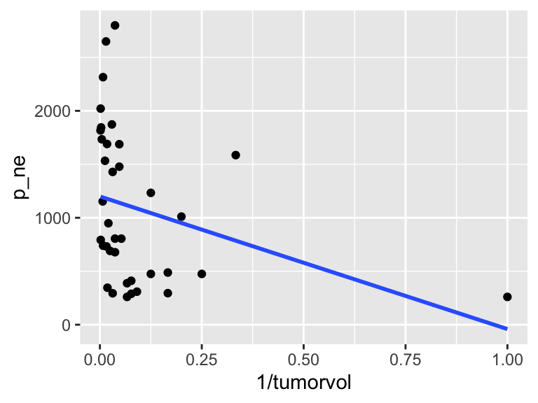

Run a least square regression model, try different transformations on the explanatory and response variables to find a model for which the technical conditions hold.
Analyze two different datasets using a simulation method (you will need the infer package) as well as Fisher’s Exact Test
Describe one thing you learned from someone (a fellow student or mentor) in our class this week (it could be: content, logistical help, background material, R information, etc.) 1-3 sentences.
Q2. Hippel-Lindau disease
Eisenhofer et al. (1999) investigated the use of plasma normetanephrine and metanephrine for detecting pheochromocytoma in patients with von Hippel-Lindau disease and multiple endocrine neoplasia type 2. The data set (vonHippelLindau.csv, posted online) contains data from this study on 26 patients with von Hippel-Lindau disease and nine patients with multiple endocrineneoplasia. The variables in the data set are (problem from Dupont, chp 2.22, PubMed article at [http://www.ncbi.nlm.nih.gov/pubmed/10369850]):
Note: the goal is to model p_ne (the response variable) from tumorvol (the explanatory variable).
variable
units
disease
0: patient has von Hippel-Lindau disease
1: patient has multiple endocrine neoplasia type 2
p_ne
plasma norepinephrine (pg/ml)
tumorvol
tumor volume (ml)
Note: the data this week is imported from the internet, so everyone can use the same link! The directories below do not go to my own computer, they go to a URL pointing to a dataset in the cloud.
Regress plasma norepinephrine against tumor volume. Draw a scatter plot of norepinephrine against tumor volume together with the estimated linear regression curve. What is the slope estimate for this regression? What proportion of the total variation in norepinephrine levels is explained by the regression?
R hints:
If the linear model is piped into tidy(), the output will be important information on a per parameter basis. For example, coefficients, standard errors, etc.
If the linear model is piped into glance(), the output will be important information on a per model basis. For example, \(R^2\), overall model p-value, model degrees of freedom, etc.
If the linear model is piped into augment(), the output will be be important information on a per observation basis. For example, residuals (.resid), fitted values / predicted values (.fitted), etc.
To make a plot in R you want to add a series of layers. The code below is meant as an example, although the variables are totally wrong. Work through the lines of code below and see if you can follow. If you don’t follow the lines, ask me!
tumor %>%# which dataset?ggplot(aes(x = id, y = tumorvol)) +# set up the plotgeom_point() +# add the pointsgeom_smooth(method ="lm", se =FALSE) # add the line a linear model without error bounds

Experiment with different transformations of norepinephrine and tumor volume. Find transformations that provide a good fit to a linear model. Report your new linear model. What is your new \(R^2\)? Does the \(R^2\) matter in choosing your transformation? Explain.
R hints:
First transform one or both of your variables (see pg 49 in your text), then re-plot the data. Below is an example, but it turns out that I made a bad choice of transformation because the plot is terrible. Why (what makes the plot look bad)?
tumor %>%ggplot(aes(x =1/tumorvol, y = p_ne)) +geom_point() +geom_smooth(method ="lm", se =FALSE)

Q3. Regression Conditions
Which of the following conditions are required to test hypotheses using simple linear regression? If the condition isn’t valid, explain why not.
The random variable \(Y\) (not conditional on \(X\)) is normally distributed.
The variance of \(Y\) depends on \(X\).
The random variable \(Y\) is normally distributed at each value of \(X\).
The mean of \(Y\) (given \(X\)) is a linear function of \(X\).
The random variable \(X\) is randomly distributed on some scale.
Q4. Chp 6, E1: Cancer and Smoking: Fisher’s Exact Test and Simulations Studies
Answer the following questions for the data displayed below. Hint: see the class notes for help with the R code. And ask lots of questions!
Was either the explanatory variable (row) or the response (column) variable fixed before the study was conducted?
Is this an example of an experiment or an observational study?
Is this a cross-classification, cohort, or case-control study? Explain.
Created a segmented bar chart for the data.
Create a simulation study to test the one-sided hypothesis that smokers are more likely to have lung cancer. Provide a p-value and state your conclusions.
Use Fisher’s exact test to test the one-sided hypothesis that smokers are more likely to have lung cancer. Provide a p-value and state your conclusions.